Spaghetti Carbonara

Ingredients
- 200g spaghetti
- 100g pancetta
- 2 eggs
- 50g parmesan
- Salt & pepper
Instructions
- Cook spaghetti in salted water.
- Fry pancetta until crisp.
- Mix eggs and parmesan in a bowl.
- Drain pasta, remove from heat, mix with pancetta and egg-cheese mixture.
- Serve immediately with extra parmesan.
Lasagna

Ingredients
- Lasagna sheets
- 500g minced beef
- 1 onion
- 2 cups tomato sauce
- 200g mozzarella
- Bechamel sauce
Instructions
- Preheat oven to 180°C.
- Cook minced beef with chopped onion until browned.
- Layer lasagna sheets, meat sauce, bechamel, and mozzarella in baking dish.
- Repeat layers and finish with cheese on top.
- Bake 40-45 min until golden and bubbly.
Margherita Pizza
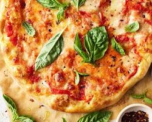
Ingredients
- Pizza dough
- Tomato sauce
- Mozzarella cheese
- Fresh basil leaves
Instructions
- Preheat oven to 220°C.
- Roll out pizza dough.
- Spread tomato sauce evenly.
- Add mozzarella and basil.
- Bake 12-15 min until crust is golden.
Tiramisu
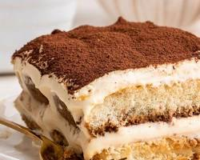
Ingredients
- Ladyfingers
- 250g mascarpone
- 3 eggs
- 100g sugar
- Coffee
- Cocoa powder
Instructions
- Brew strong coffee and let it cool.
- Beat egg yolks with sugar, mix in mascarpone.
- Whip egg whites until stiff, fold into mascarpone mixture.
- Dip ladyfingers in coffee and layer in dish.
- Spread cream mixture over layers, repeat.
- Dust with cocoa powder and chill 3-4 hours.
Sushi Rolls

Ingredients
- Sushi rice
- Nori sheets
- Cucumber
- Avocado
- Carrot
- Cooked seafood or tofu
Instructions
- Prepare sushi rice and let cool.
- Place nori on bamboo mat, spread rice thinly.
- Add fillings along one edge.
- Roll tightly with bamboo mat.
- Cut into bite-sized pieces and serve with soy sauce.
Ramen

Ingredients
- Ramen noodles
- Chicken broth
- Soy sauce
- Eggs
- Green onions
- Pork slices
Instructions
- Boil eggs for 7 min and peel.
- Heat broth, add soy sauce.
- Cook noodles separately and drain.
- Place noodles in bowl, pour broth over.
- Top with pork, egg, and green onions.
Tempura
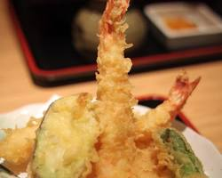
Ingredients
- Shrimp or vegetables
- Tempura batter mix
- Oil for frying
Instructions
- Prepare tempura batter according to instructions.
- Heat oil to 180°C.
- Dip shrimp/vegetables in batter and fry until golden.
- Drain excess oil and serve with dipping sauce.
Tacos al Pastor

Ingredients
- Tortillas
- Pork shoulder
- Pineapple
- Onion
- Cilantro
- Al pastor marinade
Instructions
- Marinate pork in al pastor sauce 4–6 hours.
- Grill or roast pork and pineapple.
- Warm tortillas, assemble with pork, pineapple, onion, cilantro.
- Serve with lime wedges.
Quesadilla

Ingredients
- Flour tortillas
- Cheddar cheese
- Chicken or vegetables (optional)
- Salsa
Instructions
- Heat a pan and place a tortilla on it.
- Add cheese and fillings, then top with another tortilla.
- Cook until golden on both sides and cheese melts.
- Cut into triangles and serve with salsa.
Burrito
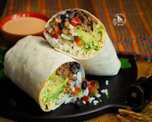
Ingredients
- Flour tortilla
- Rice
- Beans
- Chicken, beef, or vegetables
- Salsa and cheese
Instructions
- Lay out the tortilla, add rice, beans, meat, and toppings.
- Fold sides and roll tightly.
- Serve warm with extra salsa if desired.
Churros
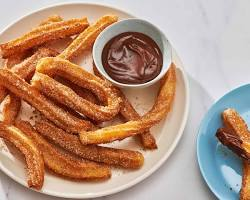
Ingredients
- Flour
- Water
- Butter
- Sugar
- Cinnamon
- Oil for frying
Instructions
- Mix water, butter, and flour to form dough.
- Pipe into hot oil and fry until golden.
- Roll in sugar and cinnamon. Serve warm.
Cheeseburger

Ingredients
- Burger buns
- Beef patties
- Cheddar cheese
- Lettuce
- Tomato
- Onion
- Condiments
Instructions
- Cook beef patties to desired doneness.
- Assemble burgers with buns, cheese, lettuce, tomato, onion, and condiments.
- Serve immediately.
Fried Chicken

Ingredients
- Chicken pieces
- Flour
- Salt & pepper
- Spices (paprika, garlic powder)
- Oil for frying
Instructions
- Season chicken and coat with flour mixture.
- Fry in hot oil until golden and cooked through.
- Drain excess oil and serve.
Mac and Cheese
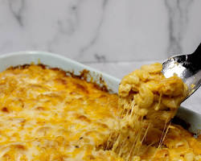
Ingredients
- Macaroni pasta
- Cheddar cheese
- Milk
- Butter
- Flour
- Salt & pepper
Instructions
- Cook macaroni, drain.
- Make cheese sauce with butter, flour, milk, and cheese.
- Mix pasta with sauce and serve warm.
Caesar Salad
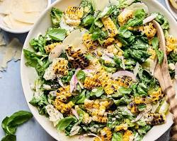
Ingredients
- Romaine lettuce
- Croutons
- Parmesan cheese
- Caesar dressing
- Chicken (optional)
Instructions
- Chop lettuce and toss with croutons and dressing.
- Add chicken if desired.
- Top with parmesan and serve.
Pancakes
Ingredients
- Flour
- Milk
- Eggs
- Sugar
- Baking powder
- Butter
Instructions
- Mix dry ingredients, then add milk and eggs.
- Cook on greased pan until bubbles form, flip and cook other side.
- Serve with syrup or toppings.
Omelette
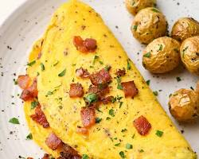
Ingredients
- Eggs
- Milk
- Salt & pepper
- Butter
- Fillings: cheese, vegetables, meat (optional)
Instructions
- Beat eggs with milk, salt, and pepper.
- Heat butter in pan, pour in eggs.
- Add fillings, cook until set, fold and serve.
French Toast
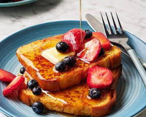
Ingredients
- Bread slices
- Eggs
- Milk
- Sugar
- Cinnamon
- Butter
Instructions
- Beat eggs, milk, sugar, and cinnamon.
- Dip bread slices in mixture.
- Cook on buttered pan until golden both sides.
- Serve with syrup or fruit.
Smoothie Bowl
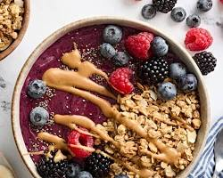
Ingredients
- Frozen fruits
- Milk or yogurt
- Toppings: granola, seeds, fruits
Instructions
- Blend frozen fruits with milk or yogurt.
- Pour into bowl and add toppings.
- Serve immediately.
Grilled Salmon
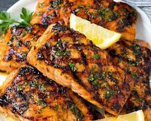
Ingredients
- Salmon fillets
- Lemon juice
- Olive oil
- Salt & pepper
- Herbs (optional)
Instructions
- Marinate salmon with lemon, olive oil, salt, pepper, and herbs.
- Grill 4-5 min per side until cooked.
- Serve with vegetables or rice.
Chocolate Cake
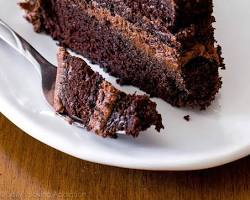
Ingredients
- Flour
- Sugar
- Cocoa powder
- Baking powder
- Eggs
- Milk
- Butter
Instructions
- Preheat oven to 180°C.
- Mix dry ingredients, add eggs, milk, and melted butter.
- Pour into pan and bake 30-35 min.
- Cool, frost if desired, and serve.
Ice Cream Sundae
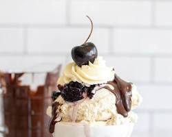
Ingredients
- Ice cream
- Chocolate syrup
- Whipped cream
- Cherries or sprinkles
Instructions
- Scoop ice cream into bowl.
- Drizzle chocolate syrup and add whipped cream.
- Top with cherries or sprinkles. Serve immediately.
Brownies
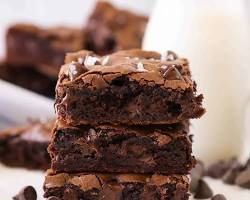
Ingredients
- Chocolate
- Butter
- Sugar
- Flour
- Eggs
- Vanilla extract
Instructions
- Preheat oven to 175°C.
- Melt chocolate and butter, mix with sugar, eggs, flour, and vanilla.
- Pour into pan and bake 25-30 min. Cool before slicing.
Butter Chicken

Ingredients
- Chicken pieces
- Butter
- Tomato puree
- Cream
- Spices: garam masala, turmeric, chili powder
Instructions
- Cook chicken with butter and spices.
- Add tomato puree and cream, simmer until cooked.
- Serve with rice or naan.
Chicken Biryani

Ingredients
- Basmati rice
- Chicken pieces
- Yogurt
- Onion
- Spices: cumin, garam masala, turmeric
- Oil or ghee
Instructions
- Marinate chicken in yogurt and spices.
- Cook rice separately.
- Layer rice and chicken in pot, cook on low heat 20-25 min.
- Serve hot with raita.
Paneer Tikka
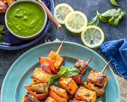
Ingredients
- Paneer cubes
- Yogurt
- Spices: chili powder, turmeric, garam masala
- Oil
- Bell peppers and onions
Instructions
- Marinate paneer and vegetables in spiced yogurt.
- Skewer and grill or bake until charred edges.
- Serve with mint chutney.
Masala Dosa
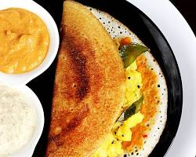
Ingredients
- Dosa batter
- Potatoes
- Onions
- Spices: mustard seeds, turmeric, curry leaves
- Oil
Instructions
- Prepare potato filling with onions and spices.
- Cook dosa on skillet, place filling inside, fold.
- Serve hot with chutney and sambar.
Pad Thai
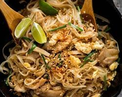
Ingredients
- Rice noodles
- Shrimp or chicken
- Eggs
- Bean sprouts
- Peanuts
- Pad Thai sauce
Instructions
- Cook noodles according to package.
- Stir-fry protein, eggs, and vegetables.
- Add noodles and sauce, mix well.
- Top with crushed peanuts and lime.
Tom Yum Soup
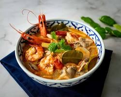
Ingredients
- Shrimp or chicken
- Lemongrass
- Kaffir lime leaves
- Galangal
- Mushrooms
- Fish sauce, lime juice, chili
Instructions
- Boil water with lemongrass, lime leaves, and galangal.
- Add mushrooms and protein, cook until done.
- Season with fish sauce, lime juice, and chili.
- Serve hot.
Green Curry
Ingredients
- Chicken or tofu
- Green curry paste
- Coconut milk
- Vegetables
- Basil leaves
Instructions
- Cook curry paste in a pan.
- Add coconut milk, protein, and vegetables.
- Simmer until cooked, garnish with basil.
- Serve with rice.